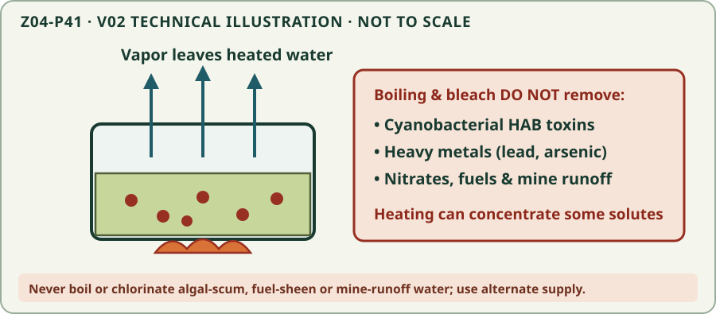

Z04-P41 · Water · New manuscript
Recognize why boiling and chlorine fail against algal and chemical toxins
Understand the physical and chemical boundary separating living microbes from heat-stable toxins and dissolved chemicals.
When it applies · Any water source impacted by harmful algal blooms, fuel spills, mine drainage, agricultural nitrates, heavy metals or industrial releases.
Equipment · Local advisories, alternate potable water supply and poison-control or public-health contact information.

Actions
- Boiling or a validated disinfectant can control some or all relevant germs depending on the method. These approaches cannot make water contaminated with harmful chemicals or toxins safe to drink.[W01, W15, W22]
- Heating can concentrate some nonvolatile contaminants. Do not infer that the vapor, condensate or remaining liquid is safe.[W01, W15, W22]
- Switch immediately to sealed commercial water, verified municipal stations or an uncontaminated watershed whenever chemical or algal-toxin hazards are present.[W01, W07, W15]
Failure recognition · Applying a rolling boil or double chlorine dose to green lake scum or fuel-tainted floodwater in the belief that stronger microbial treatment removes poisons.[W01, W15, W16]
Verify · Confirm every group member can name two contaminants that boiling makes worse rather than safer.[W15, W22, ED]
Stop or change course · Suspected chemical, fuel, heavy-metal, radioactive or harmful algal bloom contamination is an absolute stop to field boiling and standard disinfection.[W01, W15, W16, W22]
Evidence and editorial notes
- W01 · CDC · How to Make Water Safe in an Emergency (2024-09-19)
- Section: Water with fuel or toxic chemicals in it · Conditions: Suspected fuel, toxic chemicals or radioactive contamination
Support: Use a different safe supply. Standard boiling and microbial disinfection do not make this water safe.
Limitations: Does not list contaminant-specific lab remediation; applies to emergency consumer decisions only. · Conflicting evidence: None across CDC/EPA emergency guidance.
Editorial note: Used as upstream hard-stop gate prior to any field treatment card. · Specialist reviewer: Drinking-water safety and public health
Primary source · checked 2026-11-24 - W07 · CDC · Drinking Water Advisories: An Overview (current web edition)
- Section: Boil water; Do not drink; Do not use · Conditions: Public-water system advisories
Support: The notice determines safe activities. Use another source for do-not-drink notices. Do not use tap water for any purpose under a do-not-use notice unless authorities direct otherwise.
Limitations: Local utility directives supersede general field summaries. · Conflicting evidence: None; exact advisory category is authoritative.
Editorial note: Distinguishes boil-water, do-not-drink, and do-not-use actions explicitly. · Specialist reviewer: Drinking-water utility and public health
Primary source · checked 2026-11-24 - W15 · US EPA · Learn About Harmful Algae, Cyanobacteria and Cyanotoxins (current web edition)
- Section: Cyanotoxins and water treatment · Conditions: Surface water with discolored scum, mats, foul odor, or active HAB advisory
Support: Do not use a suspect bloom as a drinking-water source. Routine field microbial treatment is not a validated method of removing cyanotoxins.
Limitations: Cyanotoxins can persist in visually clear water after a bloom dissipates. · Conflicting evidence: Contradicts naive boil-everything advice; CDC/EPA HAB warnings explicitly prohibit boiling HAB water.
Editorial note: Establishes HABs as a chemical-toxin rejection trigger, not a microbial boil target. · Specialist reviewer: Environmental health and drinking-water safety
Primary source · checked 2026-11-24 - W16 · U.S. EPA · Harmful Algal Blooms and Cyanotoxins FAQ (2016)
- Section: Can I boil my water to make it safe to drink? · Conditions: Suspected cyanotoxins or applicable do-not-drink water advisory
Support: Boiling does not remove cyanotoxins and can increase their concentration. Follow the advisory and use an approved alternate source.
Limitations: Do not infer treatment capability or absence of toxin from visual appearance. · Conflicting evidence: See A02 claim audit for boundaries.
Editorial note: Supports regional Upper Midwest lake/pond source screening in summer and autumn. · Specialist reviewer: Environmental health and public health
Primary source · checked 2026-11-25 - W22 · US EPA · National Primary Drinking Water Regulations (current web edition)
- Section: National Primary Drinking Water Regulations · Conditions: Surface or groundwater near agriculture, industry, mines, roads, or old plumbing
Support: Regulated drinking-water hazards span inorganic chemicals (lead, arsenic, nitrate), organic solvents, pesticides, radionuclides, and microbes; microbial treatments do not remove dissolved inorganic or organic chemicals.
Limitations: Field observation cannot measure dissolved chemical concentration; laboratory testing is required. · Conflicting evidence: None; underpins strict chemical-rejection boundaries.
Editorial note: Explains why agricultural runoff, mine tailings, and road salt/fuel require source rejection. · Specialist reviewer: Environmental toxicology and drinking-water safety
Primary source · checked 2026-11-24
Source lineage · CDC, EPA and MDH contaminant guidance; new manuscript · Classification · New manuscript.